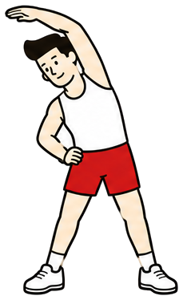
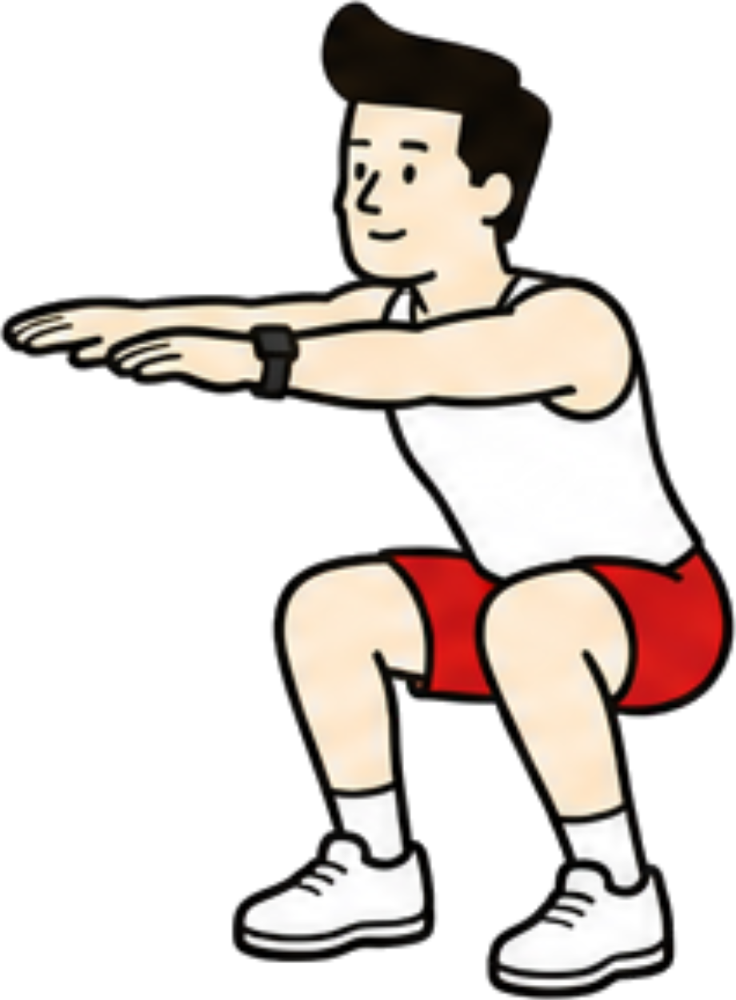
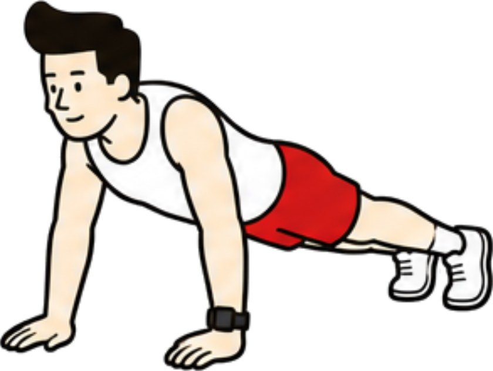
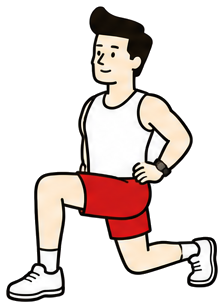

PRO
もっと深く振り返るなら
4週より前の推移、筋肉別のヒートマップ、CSV 書き出し、ルーティンと自作種目の無制限、アクセントカラーの変更。
Pro を見る
月額 190 円 / 年額 1,900 円

01 — WHAT IT DOES
機能を増やすより、ジムで指が止まらないことを選びました。
シンプルなUIで、考える手間を与えません。

やった日はカレンダーにライムのスタンプが押されます。埋まっていく月を眺めるための画面です。

仲間の投稿にメガホンをひとつ。相手に届くのは「よいしょ」だけで、数は誰にも見えません。
終了サマリーの「フィードに投稿する」を押したときだけ、仲間のフィードに出ます。種目ごとの内訳まで一緒に共有されます。
増やさないと決めているものも、同じくらい大事にしています。
他人と数値で競う仕組みは置きません。伸びたかどうかは自分の過去とだけ比べます。
知らない人とつながる経路がありません。おすすめ表示も公開タイムラインもありません。
数が誰かの目に触れることはありません。何回押されたかを競う画面を作りません。
02 — CLOSED CIRCLE
ユーザー検索もおすすめの仲間も作りません。仲間になる方法は2つだけ。
03 — CHEER
通知が飛ぶのは「よいしょ」と「がんば」だけ。7日サボっている仲間には、その日の5つのひと言から選んで送れます。
04 — THREE MODELS
データの形が違うので、入力画面も分けています。ひとつのフォームに無理やり詰め込みません。

種目・重量・回数・セット。前回の Max を横に置いて、推定1RM と自己ベストの更新を追います。
距離と時間だけ。ペースは自動計算。筋トレと同じ入力欄に押し込みません。

ヨガ・ピラティス・ストレッチ・モビリティ。重さではなく、続けた時間で見ます。
05 — YOUR CALL
終了サマリーの「フィードに投稿する」を押したときだけ公開されます。セットを追加しただけではフィードに出ません。トレーニング中の様子が勝手に共有されることはありません。
仲間になる前の投稿は、あとから仲間になった相手には表示されません。承認した瞬間に、過去の履歴すべてがさかのぼって見られることはありません。
PRO
4週より前の推移、筋肉別のヒートマップ、CSV 書き出し、ルーティンと自作種目の無制限、アクセントカラーの変更。
06 — FAQ
見られません。承認した相互フォローの仲間以外には、投稿もコメントも表示されません。ユーザー検索機能そのものがありません。
なりません。記録した時点ではフィードに出ず、「フィードに投稿する」を押したときだけ公開されます。ランニングとボディワークも同じです。
自分だけです。数の可視化はしません。相手に届くのは「よいしょ」と、「がんば」のひと言だけです。
見えません。仲間になった日より前の投稿は表示されません。承認した瞬間に履歴すべてがさかのぼって見られることはありません。
いまは kg のみです。ポンド表示には対応していません。重量は 0.1 kg 刻みで記録し、ボタンでの増減は 2.5 kg 刻みです。
運営コストが小さいからです。yoisho は現在、オフィスも広告費も投資家への還元もほぼありません。必要なデータ容量が小さいため、そこまで大きなサーバー費用もかかりません。かかっていないコストを価格に乗せない、それだけの理由です。
記録・履歴・仲間の機能は無料です。広告も入れません。記録できる種目数やセット数に上限はありません。
より深く振り返るための yoisho Pro（月額 190 円／年額 1,900 円）もあります。4 週より前の推移、筋肉別のヒートマップ、記録の CSV
書き出し、ルーティンと自作種目の無制限、アクセントカラーの変更が使えます。